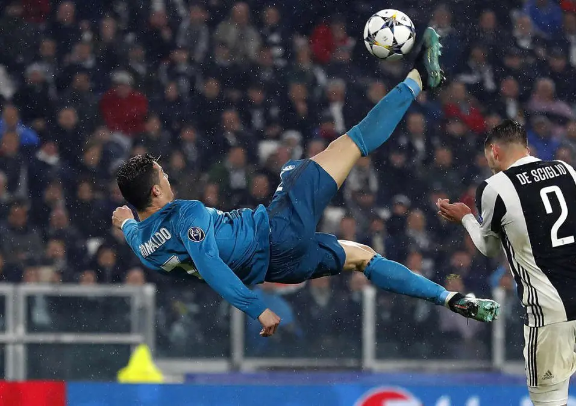
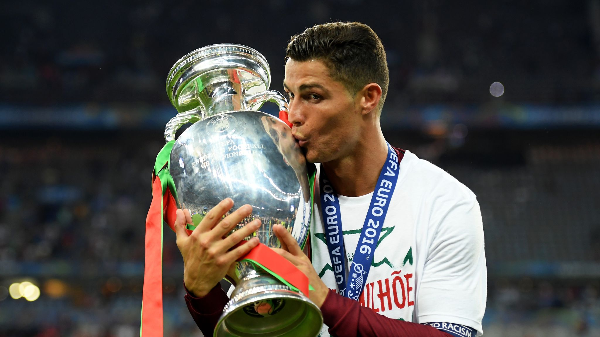
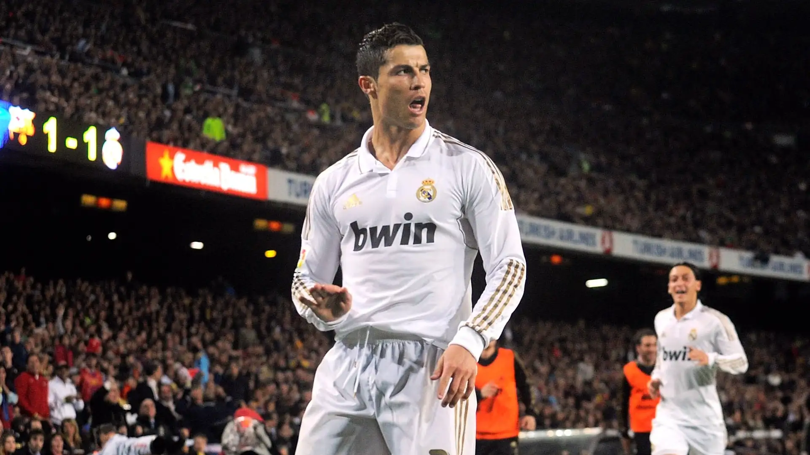
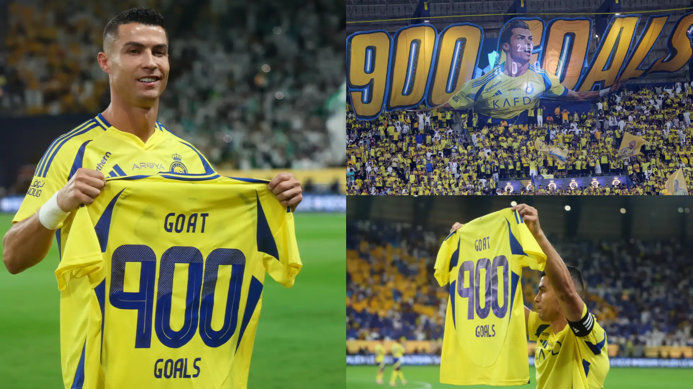

01. THE GRAVITY DEFIER
TURIN, 2018

Against Juventus in the Champions League quarter-final, Ronaldo scored a bicycle kick so perfect that even the home fans stood up to applaud. Rising 2.38 meters into the air, it is often cited as the greatest goal in the history of the competition.
|
02. NATIONAL GLORY
FRANCE, 2016

Despite being forced off with an injury early in the final, Ronaldo’s leadership from the sidelines inspired Portugal to victory against France. This win secured his country's first-ever major trophy and cemented his status as a national hero.
|
03. THE "CALMA"
BARCELONA, 2012

At the Camp Nou, after scoring a crucial goal against Barcelona, Ronaldo gestured for the crowd to "calm down." It remains one of the most iconic celebrations in football history, symbolizing his dominance in high-pressure matches.
|
04. THE 900 MARK
GLOBAL, 2024

Breaking the barrier of 900 official career goals, Ronaldo became the first male player in history to reach this milestone. His longevity and relentless hunger for goals continue to redefine the limits of the sport.
|